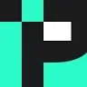
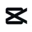
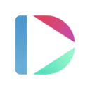

МолекулаАгрегаторы нейросетей
Молекула объединяет модели для текстов, изображений, видео и музыки. В одном аккаунте можно подобрать инструмент под этап работы, сохранить инструкции проекта и использовать готовые роли.
К задаче в МолекулеYouTube и блогинг: Начните с темы и аудитории. Сравните работу со сценарием, субтитрами и экспортом в нужный формат площадки.
Перед съёмкой соберите короткий сценарий из одного вопроса аудитории. Молекула поможет распределить объяснение по сценам и отметить, где нужен наглядный пример на экране.
Зрители спрашивают, как выбрать настольную лампу. Составь сценарий трёхминутного видео: сравнение освещения, демонстрация регулировок, критерии выбора. Характеристики моделей я добавлю после проверки.

Молекула объединяет модели для текстов, изображений, видео и музыки. В одном аккаунте можно подобрать инструмент под этап работы, сохранить инструкции проекта и использовать готовые роли.
К задаче в Молекуле
В инструменте «Lumen5» можно собирать видеосцену по описанию или визуальному исходнику. Ещё одно направление работы: готовить видеоматериалы для публикации.

MagicLight.AI относится к инструментам, которые помогают собирать видеосцену по описанию или визуальному исходнику. Ещё одно направление работы: готовить видеоматериалы для публикации.

Quso.ai рассчитан на задачи, где нужно собирать видеосцену по описанию или визуальному исходнику. Ещё одно направление работы: готовить видеоматериалы для публикации.

TextFX предлагает экспериментальные способы работы со словами и идеями. Его результаты можно использовать как материал для авторской доработки текста.

Topview AI относится к инструментам, которые помогают собирать видеосцену по описанию или визуальному исходнику. Ещё одно направление работы: готовить видеоматериалы для публикации.

Vmake AI используют для задачи: собирать видеосцену по описанию или визуальному исходнику. Ещё одно направление работы: готовить материалы о товарах и услугах.
ПикБлум AI используют для задачи: менять фотографии с учётом выбранного оформления. Ещё одно направление работы: получать изображения из словесного задания.
Abun рассчитан на задачи, где нужно готовить видеоматериалы для публикации. Ещё одно направление работы: собирать видеосцену по описанию или визуальному исходнику.
Async используют, чтобы собирать видеосцену по описанию или визуальному исходнику. Ещё одно направление работы: готовить видеоматериалы для публикации.

Fliki связывает текстовый материал с подготовкой озвученного видео. Для понятного ролика нужно согласовать порядок сцен с речью и длительностью эпизодов.

LinkedRadar используют, чтобы готовить ответы на обращения клиентов. Ещё одно направление работы: организовывать поиск потенциальных клиентов.
«MoreViews AI» представлен в разделе «Маркетинг». При выборе проверьте нужную операцию и условия работы с результатом.

Pikzels используют для задачи: получать изображения из словесного задания. Ещё одно направление работы: готовить материалы о товарах и услугах.
ScreenStory используют для задачи: собирать видеосцену по описанию или визуальному исходнику. Ещё одно направление работы: готовить видеоматериалы для публикации.
Для «Summarize Tech» сначала определите свою задачу и требуемый результат. Карточка относится к направлению «Видео».
Сравнивать «SumyAI» с другими инструментами раздела «Видео» удобнее на одинаковом исходном материале.
Сравнивать «TubeHorizon» с другими инструментами раздела «YouTube и блогинг» удобнее на одинаковом исходном материале.
Vidgenie.ai относится к инструментам, которые помогают собирать видеосцену по описанию или визуальному исходнику. Ещё одно направление работы: готовить видеоматериалы для публикации.

Zubtitle представляет собой онлайн-редактор для подготовки видео к публикации в соцсетях. В нём предусмотрены автоматическое получение субтитров и настройка их оформления. Пользователь также может менять размеры кадра и обрезать ролик, сочетая текстовое сопровождение с адаптацией исходного видео под выбранный формат публикации.
«AI YouTube Description Generator» помогает подготовить персонализированный видеоматериал.
Jupitrr AI используют для задачи: собирать видеосцену по описанию или визуальному исходнику. Ещё одно направление работы: готовить видеоматериалы для публикации.

В инструменте «Loom AI» можно собирать видеосцену по описанию или визуальному исходнику. Ещё одно направление работы: сокращать материал до основных положений.

В инструменте «Marky» можно подготавливать материалы для социальных сетей. Ещё одно направление работы: готовить видеоматериалы для публикации.
Nexlev помогает искать направления контента на YouTube с участием ИИ. Инструмент рассматривает спрос и предложение, анализирует ключевые слова и конкурентов. Дополнительные сведения включают показатели канала и оценку доходов, чтобы сопоставлять интересующую нишу с данными о её текущем состоянии.

Ocoya относится к инструментам, которые помогают готовить ответы на обращения клиентов. Ещё одно направление работы: готовить текст по теме и требованиям к содержанию.
Predis.ai используют, чтобы собирать видеосцену по описанию или визуальному исходнику. Ещё одно направление работы: готовить материалы о товарах и услугах.
SongHit рассчитан на задачи, где нужно готовить музыкальную композицию по заданию. Ещё одно направление работы: готовить видеоматериалы для публикации.

Swapzy AI относится к инструментам, которые помогают переносить образ лица на изображение или видеокадр. Ещё одно направление работы: готовить видеоматериалы для публикации.

В инструменте «TubeBuddy» можно получать изображения из словесного задания. Ещё одно направление работы: готовить видеоматериалы для публикации.
Vizard.ai используют для задачи: собирать видеосцену по описанию или визуальному исходнику. Ещё одно направление работы: готовить видеоматериалы для публикации.
Wondera рассчитан на задачи, где нужно собирать видеосцену по описанию или визуальному исходнику. Ещё одно направление работы: готовить видеоматериалы для публикации.
«AI Stream Companion» получает речевую запись из текста.

CapCut предназначен для монтажа видео, оформления субтитров и обработки звука. Автоматические инструменты помогают подготовить черновик, который нужно проверить перед экспортом.
Для «Comment Explorer - Youtube» сначала определите свою задачу и требуемый результат. Карточка относится к направлению «YouTube и блогинг».
invideo AI относится к инструментам, которые помогают собирать видеосцену по описанию или визуальному исходнику. Ещё одно направление работы: готовить видеоматериалы для публикации.

Kling AI создаёт видео и изображения по описанию и исходным кадрам. Для коротких сцен полезно заранее определить действие, движение камеры и признаки, которые должны сохраняться.
Reels Boss относится к инструментам, которые помогают собирать видеосцену по описанию или визуальному исходнику. Ещё одно направление работы: готовить видеоматериалы для публикации.
StreamLadder используют для задачи: собирать видеосцену по описанию или визуальному исходнику. Ещё одно направление работы: готовить видеоматериалы для публикации.
Для «Summarycat» сначала определите свою задачу и требуемый результат. Карточка относится к направлению «Видео».
«YouTube Summarizer» готовит текстовый черновик по условиям задачи.

Argil AI помогает собирать процессы с участием ИИ без написания программного кода. Предусмотрены шаблоны для разных задач и настройка под пользователя. Через API можно связывать работу с другими инструментами, дополняя выбранный сценарий доступными средствами персонализации продукта.
BGRemover.video используют, чтобы собирать видеосцену по описанию или визуальному исходнику. Ещё одно направление работы: готовить видеоматериалы для публикации.

ChapterMe рассчитан на задачи, где нужно собирать видеосцену по описанию или визуальному исходнику. Ещё одно направление работы: готовить видеоматериалы для публикации.
«clickgen.io» подготавливает миниатюру для видеопубликации.
Deepbrain AI Studio относится к инструментам, которые помогают собирать видеосцену по описанию или визуальному исходнику. Ещё одно направление работы: готовить видеоматериалы для публикации.

Dubb используют, чтобы собирать видеосцену по описанию или визуальному исходнику. Ещё одно направление работы: готовить видеоматериалы для публикации.

DupDub предназначен для получения речи из текста на разных языках и с различными акцентами. Сервис объединяет синтез голоса с инструментами редактирования звукового материала. Его основной сценарий связан с подготовкой озвучки: исходный текст становится речевой дорожкой, которую затем можно дорабатывать в голосовой студии.
Страница 1 из 4